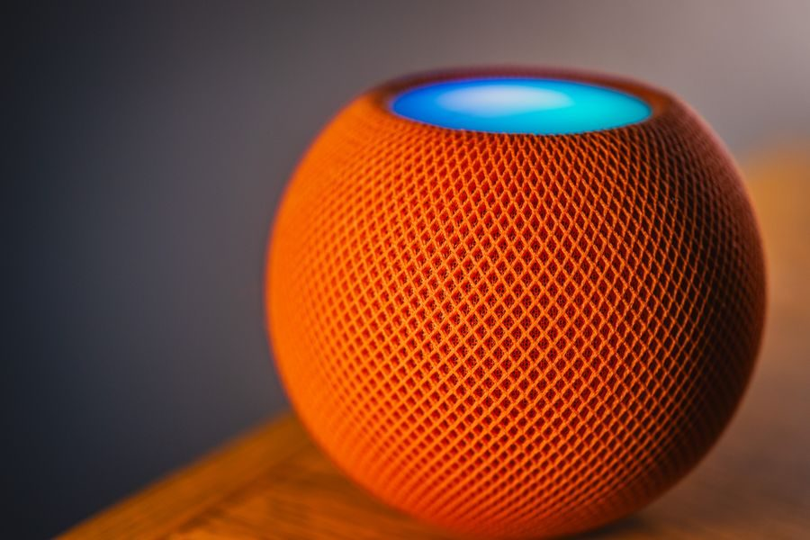

Gama media
La opción lógica si ya vives en Google. Si no, mira primero con quién hablan los aparatos que tienes.
Ver precio actual en AmazonPrecio de hoy, en Amazon. Enlace de afiliado.

| Generación | Nest Mini de 2.ª generación |
|---|---|
| Altavoz | Transductor de 40 mm, con sonido de 360° |
| Micrófonos | 3 de largo alcance, con Voice Match |
| Procesador | ARM de cuatro núcleos y 64 bits a 1,4 GHz, con motor de aprendizaje automático |
| Sensores | Controles táctiles capacitivos y detección por ultrasonidos |
| Conexión | Wi-Fi 802.11 b/g/n/ac (2,4 y 5 GHz) · Bluetooth 5.0 · Google Cast |
| Alimentación | Adaptador de 15 W (100-240 V) · cable de 1,5 m |
| Materiales | Tejido superior de botellas de plástico 100 % recicladas · carcasa con al menos un 35 % de plástico reciclado |
| Colores | Tiza, carbón, coral y cielo |
| Medidas y peso | 98 mm de diámetro y 42 mm de alto · 181 g |
Datos de la ficha oficial del fabricante (support.google.com — especificaciones de dispositivos Nest y Home, fila Nest Mini (2.ª gen.)), consultada el 2026-09-07. No publicamos ningún dato que no podamos comprobar ahí.
No ponemos precios porque cambian cada día. Lo ves actualizado al entrar.
¿Comparándolo con otros? En la guía de altavoces inteligentes: elige el asistente, no el altavoz están las cuatro opciones de la categoría: la mejor, dos de gama media y la mejor barata.